공조냉동기계기사(구) (2003-08-10 기출문제)
1과목: 기계열역학
1. 1㎏의 습포화 증기속에 증기상이 x ㎏, 액상이 (1-x)㎏포함되어 있을 때 습기도는 다음의 어느 것으로 표시되겠는 가?
- x
- x-1
- 1-x
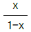
(정답률: 19%)

2. 체적 0.2 m3의 용기내에 압력 1.5 MPa, 온도 20℃의 공기가 들어 있다. 온도를 15℃로 유지하면서 1.5 ㎏의 공기를 빼내면 용기내의 압력은? (단, 공기의 기체상수 R = 0.287 kJ/㎏.K 이다.)
- 약 0.43 MPa
- 약 0.85 MPa
- 약 0.60 MPa
- 약 0.98 MPa
(정답률: 56%)
3. 이상기체가 단열된 관내를 흐를 때 운동에너지와 위치에너지의 변화를 무시할 수 있을 경우 온도의 변화는?
- 증가 한다.
- 변화가 없다.
- 감소 한다.
- 기체의 종류에 따라 다르다.
(정답률: 37%)
4. 물 1 ㎏이 압력 300 kPa에서 증발할 때 증가한 체적이 0.8 m3이었다면, 이때의 외부 일은? (단, 온도는 일정하다고 가정한다.)
- 240 kJ
- 320 kJ
- 180 kJ
- 280 kJ
(정답률: 63%)
5. 200 m의 높이로 부터 물 250 ㎏이 땅으로 떨어질 경우, 일을 열량으로 환산하면 약 몇 kJ인가?
- 117
- 79
- 203
- 490
(정답률: 60%)
6. 다음 사항 중 틀린 것은?
- 노즐에서 배압이 임계압력보다 낮을 경우 배압이 아무리 내려가도 출구에서의 유량은 임계유량이 유지되며 일정하다.
- 축소 노즐의 목(최소단면적)에서 속도가 음속이 되면 목에서의 압력이 임계압력이다.
- 축소.확대 노즐에서는 음속을 넘는 유속을 얻을 수 없다.
- 엔탈피 운동에너지로 변환시키는데 노즐이 사용된다.
(정답률: 28%)
7. 공기 15 ㎏과 수증기 5 ㎏이 혼합되어 10 m3의 용기속에 들어있다. 혼합기체의 온도가 80℃ 라면, 압력(kPa)은 약 얼마인가? (단, 공기와 수증기를 이상기체라 가정하고 각각의 기체 상수는 각각 287과 462 J/㎏.K이다.)
- 234
- 426
- 575
- 647
(정답률: 50%)
8. 한 액체 연료의 원소분석 결과 질량비로 C 86%, H2 14% 였다. 이 연료 1 ㎏을 완전연소할 때 생성되는 수증기(H2O)의 양은?
- 1.26 ㎏
- 1.52 ㎏
- 12.6 ㎏
- 15.2 ㎏
(정답률: 50%)
9. 증기압축식 냉동기에서 냉매의 증발온도가 -10℃, 응축온도가 25℃이다. 표준 사이클의 성능 계수는? (단, 아래 그림을 참조하여 가장 가까운 답을 고르시오.)
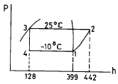
- 5.50
- 5.80
- 6.30
- 6.90
(정답률: 67%)
10. 고열원과 저열원 사이에서 작동하는 카르노(carnot)사이클 열기관이 있다. 이 열기관에서 60 kJ의 일을 얻기 위하여 100 kJ의 열을 공급하고 있다. 저열원의 온도가 15℃라고 하면 고열원의 온도는?
- 128 ℃
- 720 ℃
- 288 ℃
- 447 ℃
(정답률: 58%)
11. 1.2 MPa, 300℃의 과열증기가 있다. 이 증기의 질량유량 18,000 ㎏/h를 속도 30 m/s로 보내려면 지름 몇 cm의 관이 필요한가? (단, 1.2 MPa, 300℃ 과열증기의 비체적은 0.2183 m3/kg 이다.)
- 18.6
- 12.5
- 20.6
- 21.5
(정답률: 28%)
12. 공기 1㎏이 카르노 기관의 실린더 내에서 온도 100℃하에 100kJ의 열량을 받고 등온 팽창하였다. 주위온도를 0℃라 할 때, 비가용에너지(unavailable energy)는?
- 약 43.9kJ
- 약 64.4kJ
- 약 73.2kJ
- 약 100kJ
(정답률: 39%)
13. 노점온도가 25℃인 습공기의 온도가 40℃ 이다. 25℃와 40℃에서의 수증기의 포화압력이 각각 3.17kPa, 7.38kPa 이라면 상대습도는?
- 0.76
- 0.66
- 0.56
- 0.43
(정답률: 48%)
14. 카르노사이클을 옳게 설명한 것은?
- 이상적인 2개의 등온과정과 이상적인 2개의 정압과정으로 이루어진다.
- 이상적인 2개의 정압과정과 이상적인 2개의 단열과정으로 이루어진다.
- 이상적인 2개의 정압과정과 이상적인 2개의 정적과정으로 이루어진다.
- 이상적인 2개의 등온과정과 이상적인 2개의 단열과정으로 이루어진다.
(정답률: 50%)
15. 환산 온도(Tr)와 환산 압력(Pr)을 이용하여 나타낸 다음과 같은 상태방정식이 있다.
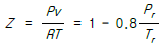
어떤물질의 기체상수가 0.189 kJ/kg.K, 임계온도가 3⑤K, 임계압력이 7380 kPa이다. 이 물질의 비체적을 위의 방정식을 이용하여 20℃, 1000 kPa 상태에서 구하면?- 0.0111 m3/kg
- 0.0443 m3/kg
- 0.0492 m3/kg
- 0.⑤54 m3/kg
(정답률: 43%)
16. 이상기체에 관해서 맞는 것은?
- 내부에너지는 압력만의 함수이다.
- 내부에너지는 체적만의 함수이다.
- 내부에너지는 온도만의 함수이다.
- 내부에너지는 엔트로피만의 함수이다.
(정답률: 48%)
17. 이상기체의 엔트로피가 변하지 않는 과정은?
- 가역 단열 과정
- 스로틀 과정
- 가역 등온 과정
- 가역 정압과정
(정답률: 58%)
18. 축소-확대 노즐에서 얻어지는 유체속도는?
- 항상 음속
- 항상 아음속
- 항상 초음속
- 아음속 또는 초음속
(정답률: 39%)
19. 과열, 과냉이 없는 이상적인 증기압축 냉동사이클에서 증발온도가 일정하고 응축온도가 내려 갈수록 성능계수는?
- 증가한다.
- 감소한다.
- 일정하다.
- 증가하기도 하고 감소하기도 한다.
(정답률: 78%)
20. 오토 사이클에서 101.3 kPa, 21℃의 공기가 압축비 7로 압축될 때, 오토 사이클의 효율은? (단, 공기의 비열비 k=1.4로 한다.)
- 98%
- 54%
- 46%
- 86%
(정답률: 62%)
2과목: 냉동공학
21. 증발기의 온도와 응축기의 온도가 동일한 조건에서 성적 계수가 가장 큰 사이클은?
- 히이트 펌프를 냉각의 목적으로 사용할 때
- 터보 냉동기에서 R - 22를 냉매로 사용할 때
- 고속 다기통 압축기에서 후레온을 냉매로 사용할 때
- 이상 냉동 사이클로 작동될 때
(정답률: 62%)
22. 용량조절장치가 있는 프레온냉동장치에서 무부하(unload) 운전시 냉동유 반송을 위한 압축기의 흡입관 배관방법은?
- 압축기를 증발기 밑에 설치한다.
- 2중 수직 상승관을 사용한다.
- 수평관에 트랩을 설치한다.
- 흡입관을 가능한 길게 배관한다.
(정답률: 60%)
23. 2단 압축 냉동기에서 냉매의 응축온도가 38℃일때 수냉식 응축기의 냉각수 입구 및 출구온도가 각각 30℃와 35℃일 때 냉매와 냉각수와의 대수평균온도차를 구하면 얼마인가?
- 4℃
- 5℃
- 6.5℃
- 7.5℃
(정답률: 79%)
24. 15℃의 물로 부터 0℃의 얼음을 매시 50㎏을 만드는 냉동기의 냉동능력은 몇 냉동톤 인가?
- 1.43 냉동 톤
- 2.24 냉동 톤
- 3.14 냉동 톤
- 4.03 냉동 톤
(정답률: 85%)
25. 다음 사항은 증발기의 구조와 작용에 대해 설명한 것이다 이 중 옳은 것은?
- 동일 운전상태에서는 만액식 증발기가 건식 증발기 보다 열통과율이 나쁘다.
- 만액식 증발기에서 부하가 커지면 냉매 순환량이 작아진다.
- 건식 증발기는 주로 온도식 팽창밸브와 모세관을 팽창밸브로 사용한다.
- 증발기의 냉각능력은 전열면적이 작을 수록 증가한다
(정답률: 57%)
26. 냉동기에서 고압의 액체냉매와 저압의 흡입증기 사이의 열교환을 시키는 열 교환기의 목적은?
- 액체 냉매를 과냉하고 흡입증기를 과열하여 증발기 및 응축기의 용량을 증대시키기 위함
- 일종의 재생 사이클을 만들기 위함
- 냉동효과를 증대시키기 위함
- 이원냉동 사이클에서의 카스케이드 응축기(Cascade condenser)를 만들기 위함
(정답률: 77%)
27. 유분리기를 반드시 사용하지 않아도 되는 경우는?
- 만액식 증발기를 사용하는 경우
- 토출배관이 길어지는 경우
- 증발온도가 낮은 경우
- HFC계 냉매를 사용하는 소형냉동장치의 경우
(정답률: 60%)
28. 저온용 단열재의 성질이 아닌 것은?
- 내구성 및 내약품성이 양호할 것
- 열전도율이 좋을 것
- 밀도가 작을 것
- 팽창계수가 작을 것
(정답률: 75%)
29. 역 카르노 사이클로 작동되는 냉동기의 성적계수가 6.84일 때 응축온도가 22.7℃ 이다. 이 때 증발온도는?
- -5℃
- -15℃
- -25℃
- -30℃
(정답률: 94%)
30. 응축기에 대한 다음 설명 중 옳은 것은?
- 냉매가스를 압축할 때 온도 상승은 압축비가 동일하면 R-12 나 R-22 다같이 동일하다.
- 증발식 응축기에서 응축 온도는 외기 습구온도보다 건구 온도측이 더 영향을 주게된다.
- 수냉 응축기의 냉각관간에 부착된 두꺼운 물때를 제거하면 전열작용은 현저히 양호하게 된다.
- 증발식 응축기의 엘리미네이터는 공기중의 먼지를 제거한다.
(정답률: 69%)
31. Fin을 부착한 응축기가 있다. 냉매측 열전달율 1600㎉ /m2h℃,냉각수측 열전달율 4000㎉/m2h℃, Fin 부착 내외 면적비 2.5일 때 비확대면 기준의 응축기 열통과율을 구하면 얼마인가?(단, 오염계수는 0.0002m2h℃/㎉ 이다.)
- 1081 ㎉/m2h℃
- 1248 ㎉/m2h℃
- 1429 ㎉/m2h℃
- 1363 ㎉/m2h℃
(정답률: 31%)
32. 냉동장치 중 압축기의 토출압력이 너무 높은 경우의 원인으로 옳지 않는 것은?
- 공기가 냉매 계통에 흡입하였다.
- 냉매 충전량이 부족하다.
- 냉각수 온도가 높거나 유량이 부족하다.
- 응축기내 냉매배관 및 전열핀이 오염되었다.
(정답률: 71%)
33. 팽창밸브에서 가장 많이 일어나는 고장은?
- 격막의 고장
- 감온구의 누설
- 스프링의 늘어남
- 침과 침좌의 빙결
(정답률: 54%)
34. 냉동장치 운전 중에 액압축이 일어날 경우의 현상에 대해 설명한 것중 옳은 것은?
- 압축기에서 평상의 운전소리와 같은 음이 들린다
- 토출관의 온도가 상승한다.
- 압축기의 실린더에 상(霜)이 없다.
- 소요동력이 증대된다.
(정답률: 59%)
35. 일원 냉동사이클과 다원 냉동사이클의 가장 큰 차이점은 무엇인가?
- 압축기의 대수
- 증발기의 수
- 냉동장치내의 냉매 종류
- 중간냉각기의 유무(有無)
(정답률: 78%)
36. 공냉식 응축기에서 열통과량을 증대시키기 위한 방법으로 적당하지 못한 것은?
- 전열면에 휜(fin)을 부착한다.
- 관두께를 얇게 한다.
- 응축압력을 낮춘다.
- 냉매와 공기와의 온도차를 증가시킨다.
(정답률: 71%)
37. R - 22를 사용하는 냉동장치에 R - 12를 사용하려 한다. 다음에서 틀린 것은?
- 냉매의 능력이 변하므로 전동기 용량이 충분한가 확인한다.
- 응축기, 증발기 용량이 충분한가 확인한다.
- 가스켓,시일 등의 패킹 선정에 유의해야 한다.
- 동일 탄화수소계 냉매이므로 그대로 운전할 수 있다.
(정답률: 82%)
38. 어떤 냉동기에서 0℃의 물로 0℃의 얼음 2톤을 생산하는 데 50㎾h의 일이 소요된다면 이 냉동기의 성능계수는 ? (단, 물의 융해열은 80㎉/㎏이다.)
- 3.72
- 3.82
- 3.90
- 4.0
(정답률: 82%)
39. 냉매 교축 후의 상태가 아닌 것은?
- 온도는 강하한다.
- 압력은 강하한다.
- 엔탈피는 일정불변이다.
- 엔트로피는 감소한다.
(정답률: 83%)
40. 냉동기에 사용되고 있는 냉매로 대기압하에서 비등점이 가장 높은 냉매는?
- SO2
- NH3
- CO2
- CH3Cl
(정답률: 30%)
3과목: 공기조화
41. 다음은 공기조화기에 걸리는 열부하 요소에 대한 것이다. 적당하지 않은 것은?
- 외기부하
- 재열부하
- 덕트계통에서의 열부하
- 배관계통에서의 열부하
(정답률: 74%)
42. 다음 중 팬코일 유닛에 적합한 송풍기는?
- 터보형
- 다익형
- 사류형
- 축류형
(정답률: 62%)
43. 다음 설명 중 옳지 않은 것은?
- 건공기(dry air)는 산소, 질소, 탄산가스, 아르곤 및 헬륨 등의 기체가 혼합된 가스이다.
- 습공기(moist air)는 건공기(dry air)와 수증기가 혼합된 것이다.
- 포화공기의 온도를 습공기의 노점온도(dew point temperature)라 한다.
- 현열비(sensible heat factor)는 실내의 전체열량에 대한 잠열량의 비이다.
(정답률: 75%)
44. 보일러 출력표시방법은 다음과 같이 하고있다. 이 중에서 출력이 가장 적게 표시되는 것은?
- 정격 출력
- 과부하 출력
- 정미 출력
- 상용 출력
(정답률: 90%)
45. 덕트 시공에서 올바르지 않은 것은 ? (단, R은 곡율 반경이고, W는 덕트의 폭이다.)
- 덕트의 아스펙트 비는 4 이내로 한다.
- 굽힘부분은 되도록 큰 곡율반경을 취한다.
- 덕트 확대각도는 15도(고속덕트에서는 8도)이하, 축소각도는 30도(고속덕트에서는 15도)이내로 한다.
- 덕트의 굴곡부에서 R/W가 1.0 이상일 때에는 가이드 베인을 설치한다.
(정답률: 62%)
46. 원형덕트에서 사각덕트로 환산시키는 식이 맞는 것은?(단, a는 사각덕트의 장변길이, b는 단변길이, d는 원형 덕트의 직경 또는 상당직경이다.)
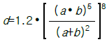
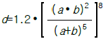
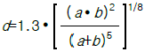
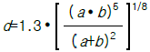
(정답률: 54%)
47. 다음 공조방식중에서 전공기방식에 속하지 않는 것은?
- 단일덕트 방식
- 이중덕트 방식
- 인덕숀유닛트 방식
- 각층 유닛 방식
(정답률: 80%)
48. 다음 공기조화 방식중 부하패턴이 다른 각 실내의 온습도 조절에 가장 유리한 것은?
- 단일 덕트 방식
- 이중 덕트 방식
- 멀티죤 유니트 방식
- 패키지 방식
(정답률: 40%)
49. 온도 10℃, 상대습도 50%의 공기를 25℃로 하면 상대습도는 얼마인가?(단, 10℃일 경우의 포화 증기압은 1.2512× 10-2 kgf/㎝2이고 , 25℃일 경우의 포화 증기압은 3.2284× 10-2㎏f/㎝2 이다.)
- 9.5%
- 19.4%
- 27.2%
- 35.5%
(정답률: 56%)
50. 다음 중 온수난방의 특징이 아닌 것은?
- 저온 방열이므로 안전하고,양호한 온열환경을 얻는다
- 온수 온도를 중앙에서 집중적으로 쉽게 조절할 수 있다.
- 축열용량이 크므로 운전을 정지해도 금방 식지 않는 다.
- 방열량의 조절이 곤란하다.
(정답률: 90%)
51. 관경 50A인 온수배관에서 직선길이가 200m라고 한다. 중간에 사용된 부속품은 90° 엘보 10개, 게이트밸브 2개라고 할 때 전체 등가길이는 얼마인가?
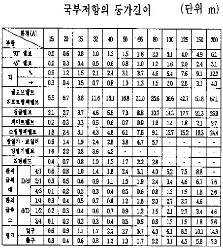
- 216.4m
- 232.8m
- 249.2m
- 265.6m
(정답률: 62%)
52. 건구온도 32℃, 습구온도 26℃의 신선외기 1800m3/h를 실내로 도입하는 경우 이 외기에서 제거해야 할 전열량은? (단, 실내 공기는 27℃(DB), 50%(RH)의 상태로 유지되며, 32℃, 27℃에서의 절대습도는 각각 0.0189㎏/㎏', 0.0112kg/kg'이다.)
- 약 9900㎉/h
- 약 12500㎉/h
- 약 18300㎉/h
- 약 23300㎉/h
(정답률: 55%)
53. 증기난방배관에서 증기트랩을 사용하는 이유로서 적당한 것은?
- 관내의 공기를 배출하기 위하여
- 배관의 신축을 흡수하기 위하여
- 관내의 압력을 조절하기 위하여
- 관내의 증기와 응축수를 분리하기 위하여
(정답률: 80%)
54. 다음 중 분진 포집율의 측정법이 아닌 것은?
- 비색법
- 계수법
- 살균법
- 중량법
(정답률: 74%)
55. 공기조화 방식의 특징 중 전공기식 정풍량 단일 덕트방식에 해당하는 것은?
- 실내부하에 따라 개별실 제어가 가능하다.
- 가변풍량방식에 비하여 송풍기 동력이 커져서 에너지 소비가 증대한다.
- 급기류가 변화하므로 불쾌감을 줄 우려가 있다.
- 최소풍량시 외기도입이 어렵다.
(정답률: 89%)
56. 냉수코일 설계시 유의사항으로 옳은 것은?
- 대향류로 하고 대수평균 온도차를 되도록 크게한다
- 병행류로 하고 대수평균 온도차를 되도록 작게한다
- 코일통과 풍속을 5㎧이상으로 취하는 것이 경제적이다.
- 일반적으로 냉수입출구 온도차는 10℃보다 크게 취하여 통과유량를 적게하는 것이 좋다.
(정답률: 94%)
57. 에어워셔에서 수 공기비란?
- 분무수량/공기량
- 공기량/수량
- 1 - 수량/공기량
- 1 - 공기량/수량
(정답률: 59%)
58. 주철제 보일러의 장점을 열거한 것이다. 틀린 것은?
- 조립식이므로 운반, 반입이 용이하다.
- 내식성이 우수하며 수명이 길다.
- 강도가 높아 고압용으로 사용된다.
- 취급이 간단하다.
(정답률: 87%)
59. 습공기 100Kg이 있다. 이 때 혼합되어 있는 수증기의 무게를 2Kg이라고 한다면 공기의 절대습도는?
- 0.02Kg/Kg'
- 0.002Kg/Kg'
- 0.2Kg/Kg'
- 0.0002Kg/Kg'
(정답률: 90%)
60. 1500명을 수용할 수 있는 강당에 전등에 의해 매시간 1240㎉의 열이 발생하고 있다. 실내의 온도를 24℃로 유지하기 위하여 시간당 필요한 환기량은 약 얼마인가? (단,외기의 온도는 12℃이며,1인당 현열 발열량은 55㎉/h 이다.)
- 24,000m3/hr
- 28,000m3/hr
- 37,000m3/hr
- 48,000m3/hr
(정답률: 48%)
4과목: 전기제어공학
61. 플로피디스크 등의 외부 메모리와 CPU속의 메모리와의 사이에서 데이타 전송을 행하는 경우에 사용되는 입.출력 제어방식은?
- HAND SHAKE
- INTERRUPTION
- DIRECT MEMORY ACCESS
- INDIRECT MEMORY ACCESS
(정답률: 53%)
62. 잔류편차가 있는 제어계로 P제어라고 하는 것은?
- 비례제어
- 미분제어
- 적분제어
- 비례적분미분제어
(정답률: 58%)
63. 단상 교류전력을 측정하는 방법이 아닌 것은?
- 3전압계법
- 3전류계법
- 단상전력계법
- 2전력계법
(정답률: 29%)
64. 인가된 직류전압을 변화시켜서 전동기 회전수를 1000rpm으로 하고자 한다. 이 경우 회전수는 어느 용어에 해당하는가?(오류 신고가 접수된 문제입니다. 반드시 정답과 해설을 확인하시기 바랍니다.)
- 제어량
- 조작량
- 목표값
- 제어대상
(정답률: 0%)
65. 엘리베이터용 전동기의 필요 특성으로 잘못된 것은?
- 회전부분의 관성모멘트가 작아야 한다.
- 가속도의 변화비율이 일정값이 되어야 한다.
- 기동토크가 작아야 한다.
- 소음이 작아야 한다.
(정답률: 60%)
66. 기계기구의 상태나 신호의 전달 및 시퀀스의 구성을 나타내는 것은?
- 타임챠트
- 논리회로
- 전개접속도
- 블럭선도
(정답률: 39%)
67. 다음의 제어기기에서 압력을 변위로 변환하는 변환요소가 아닌 것은?
- 벨로우즈
- 다이어프램
- 스프링
- 노즈플래퍼
(정답률: 63%)
68. 전원전압을 안정하게 유지하기 위하여 사용되는 다이오드는?
- 보드형다이오드
- 제너다이오드
- 터널다이오드
- 바렉터다이오드
(정답률: 67%)
69. 유도전동기의 회전력은 단자전압과 어떤 관계를 갖는가?
- 단자전압에 무관하다.
- 단자전압에 비례한다.
- 단자전압의 1/2승에 비례한다.
- 단자전압의 2승에 비례한다.
(정답률: 24%)
70. 연산증폭기(op-amp)의 응용이 아닌 것은?
- 미분기
- 적분기
- 디지탈 반가산증폭기
- 아날로그 가산증폭기
(정답률: 50%)
71. 입력이 011(2)일 때, 출력은 3V인 컴퓨터 제어의 D/A 변환기에서 입력을 101(2)로 하였을 때 출력은 몇 V 인가?(단, 3 bit 디지탈 입력이 011(2)은 off, on, on을 뜻하고 입력과 출력은 비례한다.)
- 3
- 4
- 5
- 6
(정답률: 63%)
72. 시퀀스제어의 장점이 아닌 것은?
- 구성하기 쉽다.
- 시스템의 구성비가 낮다.
- 원하는 출력을 얻기 위해 보정이 필요 없다.
- 유지 및 보수가 간단하다.
(정답률: 57%)
73. R=10Ω, L=100mH, C=10㎌인 직렬회로에서의 공진주파수는 약 몇 Hz 인가?
- 159
- 169
- 1590
- 1690
(정답률: 40%)
74. 어떤 회로의 유효전력이 80W, 무효전력이 60Var이면 역률은 몇 % 인가?
- 50
- 70
- 80
- 90
(정답률: 67%)
75. 동일 전선을 균등하게 4배로 연장하였을 때 저항은 몇 배로 되는가?
- 1/4
- 1/16
- 16
- 4
(정답률: 40%)
76. r=2Ω인 저항을 그림과 같이 무한히 길게 연결할 때 ab 사이의 합성저항은 몇 Ω 인가?
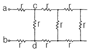
- 0
- ∞
- 2
- 2(1+√3)
(정답률: 34%)
77. 직선 전류에 의해서 그 주위에 생기는 환상의 자계 방향은?
- 전류 방향
- 전류와 반대 방향
- 오른손 나사의 진행 방향
- 오른손 나사의 회전 방향
(정답률: 48%)
78. 그림과 같은 논리회로가 나타내는 식은?
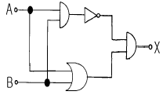
- X=AB+BA
- X=AB+(A+B)
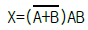
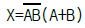
(정답률: 34%)
79. 3상 유도전동기의 속도제어방법으로 사용되는 것이 아닌것은?
- 슬립 s의 변화에 의한 방법
- 전압 E의 변화에 의한 방법
- 극수 P의 변화에 의한 방법
- 주파수 f의 변화에 의한 방법
(정답률: 48%)
80. 단위 피드백 제어계통에서 입력과 출력이 같다면 전향 전달함수 G 의 값은?
- ｜G｜= 0
- ｜G｜= 0.707
- ｜G｜= 1
- ｜G｜= ∞
(정답률: 50%)
5과목: 배관일반
81. 급수배관에서 수격현상을 방지하는 방법은?
- 도피관을 설치하여 옥상탱크에 연결한다
- 수압관을 갑자기 높인다
- 밸브나 수도꼭지를 갑자기 열고 닫는다
- 급폐쇄형 밸브 근처에 공기실을 설치한다
(정답률: 67%)
82. 다음중 중수도 설비에 대한 사항을 가장 올바르게 표현한 것은?
- 급수설비에 있어서 수도본관의 압력을 높여 공급하는 시설
- 급수와 배수설비를 동시에 취급하는 설비
- 급수설비에서 수돗물의 공급량을 확대하여 필요 부하에 맞도록 하는 설비
- 한번 사용한 수돗물을 생활용수 등으로 재활용 할 수 있도록 다시 처리하는 시설
(정답률: 38%)
83. 가스배관 외부에 나타내지 않는 것은?
- 사용가스명
- 최고사용압력
- 유량
- 가스흐름방향
(정답률: 54%)
84. 플레어 이음은 어느 관에 사용되는가?
- 강관
- 동관
- 플라스틱관
- 시멘트관
(정답률: 69%)
85. 다음은 동관 접합의 종류를 열거한 것이다. 아닌 것은?
- 메카니칼 접합
- 플레어 접합
- 용접 접합
- 납땜 접합
(정답률: 75%)
86. 직접가열식 급탕법에 비해 간접가열식 급탕법의 우수한 점을 열거한 것이다. 아닌 것은?
- 난방 또는 주방용 보일러에 용량을 추가하면 되므로 설비비가 절약되고 설비관리가 편리하다.
- 저탕조 내부에 스케일이 잘 발생하지 않으며 전열 효율이 좋다.
- 가열 코일내 증기는 0.8∼1.5kg/㎝2의 압력이면 되므로 고압 보일러가 필요하다
- 호텔, 사무소, 병원 등의 대규모 건물의 급탕 설비에 적당하다.
(정답률: 39%)
87. 온수난방용 기기가 아닌 것은?
- 증발탱크
- 보일러
- 방열기
- 팽창탱크
(정답률: 42%)
88. 로울러 밴드를 사용하여 배관을 지지하는 주된 이유는?
- 신축허용
- 부식방지
- 시공간편
- 해체용이
(정답률: 58%)
89. 증기난방의 환수방법중 증기의 순환이 가장 빠르며 방열기 보일러 등의 설치위치에 제한을 받지 않고 대규모 난방에 주로 채택되는 방식은?
- 단관식 상향 증기 난방법
- 단관식 하향 증기 난방법
- 진공환수식 증기 난방법
- 기계환수식 증기 난방법
(정답률: 75%)
90. 설비의 냉· 난방배관 시험 중 적합하지 않은 것은?
- 수압시험
- 기밀시험
- 기압시험
- 만수시험
(정답률: 56%)
91. 냉매배관 중 토출관 시공시 응축기가 압축기보다 몇 m 이상 높은 곳에 있을 때 오일 트랩을 설치하는가?
- 0.1∼0.4m
- 0.5∼0.9m
- 1.0∼1.5m
- 2.5∼3.0m
(정답률: 17%)
92. 그림과 같은 방열기 표시에 대한 설명중 5의 의미는?
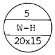
- 방열기의 섹션수
- 방열기 사용 압력
- 방열기의 종별과 형
- 유입관의 관경
(정답률: 71%)
93. 다음 보온재중 진동이 있는 곳에 사용할 수 없는 것은?
- 그라스울
- 석면
- 규조토
- 펠트
(정답률: 70%)
94. 다음은 역지밸브(check valve)에 대한 기술이다. 잘못된 것은?
- 관내유체의 흐름을 일정방향으로 유지하기 위하여 사용한다.
- 스윙형과 리프트형이 있다.
- 수평관,수직관 모두 사용할 수 있다.
- 필요할 때 수동으로 개폐하여야 한다.
(정답률: 44%)
95. 통기관의 역할로서 올바른 것은?
- 실내의 취기가 역류하는 것을 방지한다.
- 실내 환기를 하게 된다.
- 트랩의 봉수를 보호한다.
- 위생해충의 침입을 방지한다.
(정답률: 56%)
96. 다음 밸브 중에서 유체의 유동 방향이 없는 것은?
- 앵글밸브
- 슬루스 밸브
- 글로브 밸브
- 감압 밸브
(정답률: 8%)
97. 프레온 냉동장치 배관에서 압축기가 증발기 하부에 위치하는 경우 증발기 상부보다 몇 mm이상 입상시키는가?
- 10mm
- 50mm
- 100mm
- 150mm
(정답률: 34%)
98. 급수관의 평균 유속이 2m/sec이고 유량이 100ℓ /sec로 흐르고 있다.관 내의 마찰손실을 무시할 때 안지름은 몇 mm인가?
- 173mm
- 227mm
- 247mm
- 252mm
(정답률: 43%)
99. 강관작업에서 아래 그림처럼 15A 나사용 90° 엘보 2개를 사용하여 길이가 200mm가 되게 연결작업을 하려고 한다. 이때 실제 15A 강관의 길이는 얼마인가?(단, a : 나사가 물리는 최소길이는 11mmA : 이음쇠의 중심에서 단면까지의 길이는 27mm로 한다.)
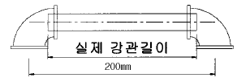
- 142mm
- 158mm
- 168mm
- 176mm
(정답률: 69%)
100. 다음 중 고가수조의 설치높이와 관련이 가장 적은 것은?
- 최상층 수전의 높이
- 고가수조의 용량
- 수전의 소요압력
- 배관의 마찰저항
(정답률: 50%)